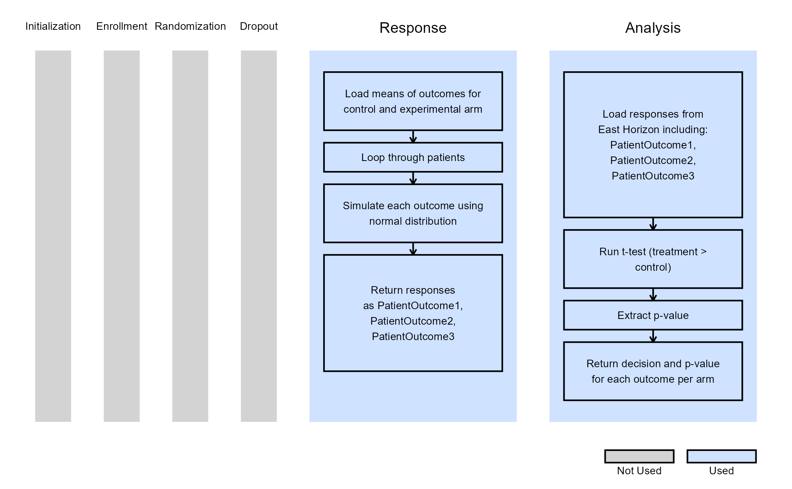

Multiple Endpoints With Covariates and Stratified Randomisation
Julija Saltane
October 16, 2025
MultipleEndpointsWithCovariates.RmdThe following scripts are related to both the Integration Point: Response and the Integration Point: Analysis. Click on the links for more information about these integration points.
Introduction
The following examples illustrate how to incorporate new patient outcome simulation (response) and analysis (design) capabilities into East Horizon using R functions in the context of a two-arm trial. Each example features a trial design consisting of a standard-of-care control arm and an experimental treatment arm, with three independent patient outcomes modeled as continuous data.
Two of the examples include two binary covariates, and one of these also applies stratified randomization based on the covariates. All designs include a single final analysis. In the example without covariates, the response data is analyzed using a t-test. In contrast, the other two examples employ Analysis of covariance (ANCOVA) to account for covariate effects.
Once CyneRgy is installed, you can load this example in RStudio with the following command:
CyneRgy::RunExample( "MultipleEndpointsWithCovariates" )This will open the corresponding RStudio project.
RStudio Project File: MultipleEndpointsWithCovariates.Rproj
In the R directory of this example, you will find the following R files:
SimulateMultipleOutcomes.R - Provides an example R function to simulate three independent normally distributed outcomes for a given number of subject. Note that this example can be extended to any number of endpoints.
SimulateMultipleOutcomesCovariates.R - This R function simulates three independent normally distributed outcomes with two binary covariates. This function is extensible to any number of endpoints and covariates.
SimulateMultipleOutcomesCovariatesStratRandomization.R - Similar to the previous function, this version explicitly incorporates stratified randomization based on two binary covariates.
AnalyzeMultipleOutcomes.R - This files provides an example R function to perform endpoint-wise one-sided t-tests on simulated patient data with three normally distributed outcomes.
AnalyzeMultipleOutcomesCovariates.R - This files provides and example R function to perform statistical analysis on simulated patient-level data with three continuous endpoints and binary covariates. For each endpoint, an ANCOVA model is fitted to assess the treatment effect while adjusting for covariates.
AnalyzeMultipleOutcomesCovariatesStratRandomization.R - Extends the previous analysis to include stratified randomization. Each endpoint is analyzed using ANCOVA, adjusting for covariates.
Example 1 - Simulate and Analyze Multiple Endpoint Data
This endpoint is related to the following R files: SimulateMultipleOutcomes.R and AnalyzeMultipleOutcomes.R.
In this example, patient outcomes are modeled as independent, continuous variables generated from a normal distribution. Each outcome has a treatment-specific mean, while the standard deviation is assumed to be the same across all outcomes.
The table below defines the user-specified parameters used to simulate patient data:
| User parameter | Definition |
|---|---|
MeanOutcomeXCtrl |
Mean of outcome X for the control arm, where X = 1, 2 or 3. |
MeanOutcomeXTrt |
Mean of outcome X for the experimental arm, where X = 1, 2 or 3. |
The simulated data is analyzed using a one-sided t-test to compare the treatment and control groups, assuming equal variances. No additional user-defined parameters are required for the analysis in this example.
The figure below illustrates where this example fits within the R integration points of East Horizon, along with a flowchart outlining the key steps performed by the R code.

Example 2 - Simulate and Analyze Multiple Endpoint Data with Two Binary Covariates
This endpoint is related to the following R files: SimulateMultipleOutcomesCovariates.R and AnalyzeMultipleOutcomesCovariates.R.
Just like in Example 1, patient outcomes are modeled as independent, continuous variables generated from a normal distribution. Additionally, two binary covariates are included, each with user-specified probabilities and effect sizes.
The table below outlines the user-specified parameters used to simulate patient data:
| User parameter | Definition |
|---|---|
MeanOutcomeXCtrl |
Mean of outcome X for the control arm, where X = 1, 2 or 3. |
MeanOutcomeXTrt |
Mean of outcome X for the experimental arm, where X = 1, 2 or 3. |
BetaY |
Effect size of binary covariate Y, where Y = 1 or 2. |
CovYProb |
Probability that covariate Y takes value 1, where Y = 1 or 2. |
The simulated data is analyzed ANCOVA model to estimate the treatment effect while adjusting for covariates. No additional user-defined parameters are required for the analysis in this example.
The figure below shows how this example integrates with the R components of East Horizon, along with a flowchart summarizing the key steps executed by the R code.

Example 3 - Simulate and Analyze Multiple Endpoint Data with Two Binary Covariates and Stratified Randomization
This endpoint is related to the following R files: SimulateMultipleOutcomesCovariatesStratRandomization.R and AnalyzeMultipleOutcomesCovariatesStratRandomization.R.
Example 3 introduces stratified randomization, replacing East Horizon’s native patient allocation feature. As in Examples 1 and 2, patient outcomes are modeled as independent, continuous variables from a normal distribution. Two binary covariates are again included, with their probabilities and effect sizes specified as in Example 2. Stratified randomization is performed based on these covariates.
The table below defines the user-specified parameters used to simulate patient data:
| User parameter | Definition |
|---|---|
MeanOutcomeXCtrl |
Mean of outcome X for the control arm, where X = 1, 2 or 3. |
MeanOutcomeXTrt |
Mean of outcome X for the experimental arm, where X = 1, 2 or 3. |
BetaY |
Effect size of binary covariate Y, where Y = 1 or 2. |
CovYProb |
Probability that covariate Y takes the value 1, where Y = 1 or 2. |
| AllocRatio | Ratio of treatment to control allocation. |
As before, the simulated data is analyzed using an ANCOVA model to assess the treatment effect while adjusting for covariates. In this example, the treatment assignments generated during the response simulation are directly used in the analysis. No additional user-defined parameters are needed for the analysis.
The figure below illustrates how this example fits into the R integration points of East Horizon, accompanied by a flowchart detailing the main steps performed by the R code.